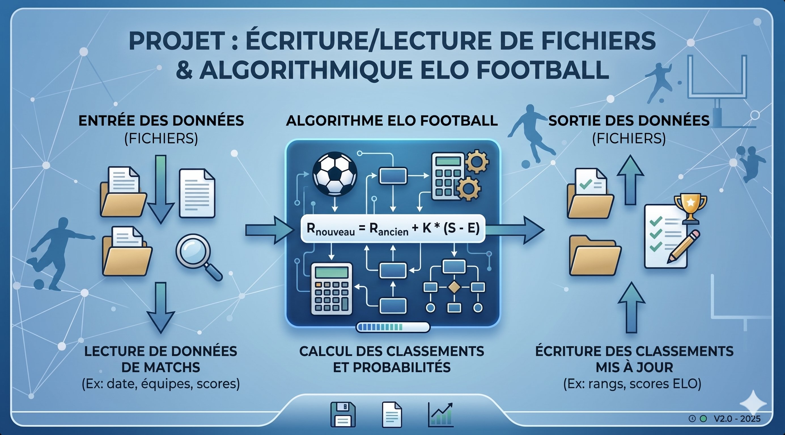

Écriture/Lecture de Fichiers & Algorithmique ELO Football

🔍 AgrandirCadre du projet & Objectifs
Développement d'un programme de lecture de fichiers de matchs football, d'application de l'algorithme ELO pour calculer les classements, et d'écriture des résultats mis à jour. La formule ELO : R_nouveau = R_ancien + K × (S − E).
Étapes de réalisation
Lecture des données
Fonctions de lecture de fichiers structurés contenant les résultats de matchs (date, équipes, scores). Gestion des formats et cas d'erreur.
Implémentation ELO
Codage de la formule de calcul des probabilités de victoire et mise à jour des scores après chaque match.
Écriture des résultats
Export des classements mis à jour vers fichiers de sortie. Vérification de cohérence entre les données écrites et les calculs.
Ce que j'en retire
L'importance des tests unitaires
Une erreur dans le calcul de la probabilité attendue fausse tous les classements suivants — l'effet cascade m'a appris à tester chaque fonction indépendamment.
💡 Ce que j'ai retenu
La gestion des fichiers (encodage, séparateurs, lignes vides) est souvent plus piégeuse que l'algorithme lui-même.
Ce que ça m'apporte en entreprise
L'automatisation de calculs répétitifs avec Python est un réflexe indispensable en entreprise. Le principe de l'algorithme ELO — attribuer un score dynamique à partir d'une historique de résultats — s'applique directement à des problématiques de scoring client, de classement de fournisseurs ou de performance commerciale.
Positionnement par rapport aux ACs
| Apprentissage Critique | Statut | Commentaires |
|---|---|---|
| AC1.1.03 Connaître la syntaxe des langages et savoir l'utiliser |
A | Développement autonome de toutes les fonctions en Python sans erreur de syntaxe bloquante. |
| AC1.1.05 Comprendre les structures algorithmiques de base |
A | Boucle de traitement des matchs, conditions et calculs cumulatifs correctement implémentés. |
| AC1.1.06 Prendre conscience de l'intérêt de la programmation |
A | Cette SAÉ a concrétisé l'utilité du code : automatiser 500 matchs en quelques secondes vs des heures à la main. |